TL;DRThinkWorld thinks in motion that humans and robots share, imagines the future that motion leads to, and learns from any video by checking that imagination against what really happened.
Overview & Motivation
Every video records the consequences of an action
Robot data is scarce. Human video is abundant but has no robot actions. ThinkWorld learns from both.
Latent action models
Any unlabeled video
May encode camera or appearance
Explicit motion supervision
Physically grounded
Needs pose estimation & retargeting
ThinkWorld
Motion tokens shared by humans & robots
Supervised by observed futures, no labels
ThinkWorld at a glance. Select a panel to highlight it.
Human + Robot Experience
Human Egocentric Video
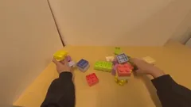
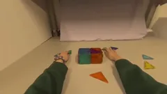
EgoDex
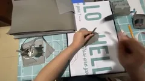
EgoVerse
Robot Demonstrations
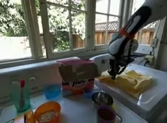
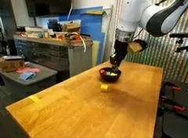
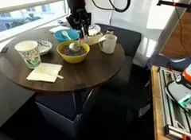
DROID
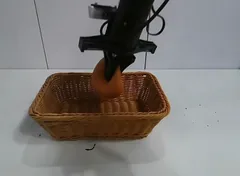
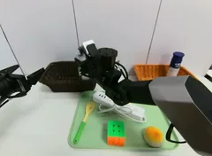
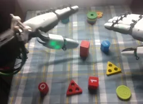
RoboCOIN
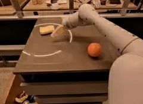
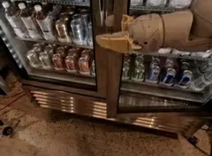
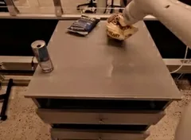
RT-1
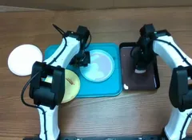
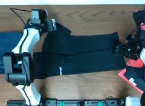
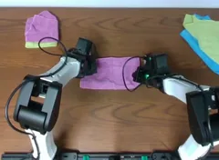
Bimanual YAM
Different Embodiments, Shared Dynamics
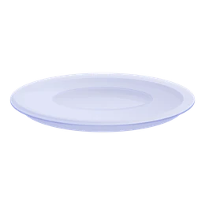
“Put the apple on the plate.”
Unified Motion Space
Future World State
ThinkWorld
Future Imagination via Chain-of-Dynamics
…
…
Chain of Dynamics
Future Imagination
Scaling Chain-of-Dynamics via RL
Scalable Rewardcompare
Future Imagination
Future World State
Strong Real-World Generalization
Diffusion PolicyMolmoAct2LaWAMOurs
48.9
77.8
46.7
100
In-Domain
16.7
46.7
44.4
88.9
Out-of-Domain
New objectNew trajectoryNew environmentID
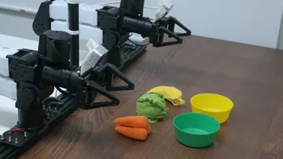
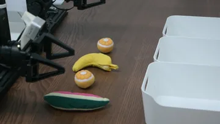
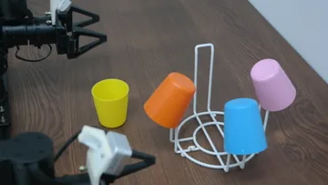
OOD
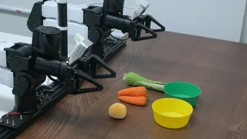
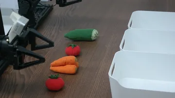
Skill Composition from Human Videos
Atomic skills
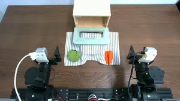
Open
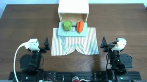
Put right
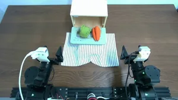
Put left
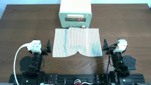
Close
Human demo
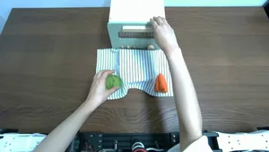
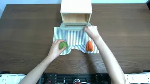
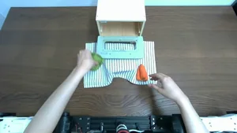
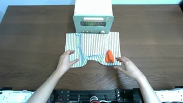
OPENPUT-LCLOSE
Composed rollout
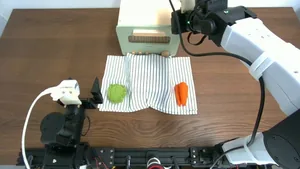
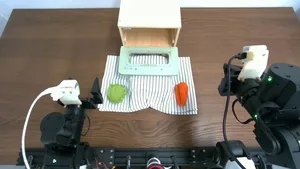
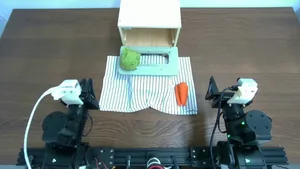
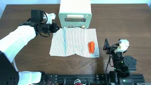
OPENPUT-LCLOSE
Learning from human and robot experience
Eight datasets of egocentric human video and robot demonstrations.
Human egocentric videoRobot demonstrations
4,276 hof video
44%egocentric human video, no action labels
8datasets, one shared motion vocabulary
Method
Reason in dynamics, then check the reasoning against the world
Two training stages. (a) Learn to write a Chain-of-Dynamics and imagine its future. (b) Reinforce the chains whose imagined future matches the real one.
Stage (a) Chain-of-Dynamics for Embodied Action Reasoning
Chain of Dynamics
Motion Tok.
…
q̃t
VFM
VLM
Action Decoder
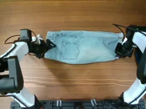
History + Observation
“Fold cloth”
Task
Query
Proprio
Noised action
Action-Grounded Reasoning Space
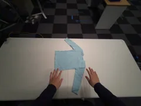
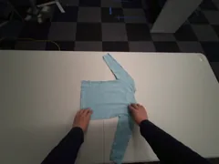
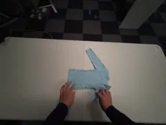
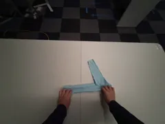
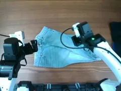
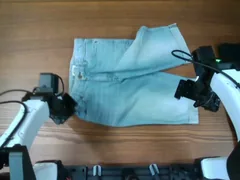
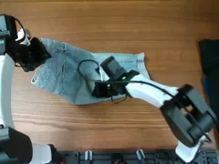
Human & Robot EEF Action
Motion Tokenizer
Motion tokensCoD
785429…4
…
Unified Motion Space
CoD-Conditioned Future Imagination
Predicted Future Query q̃t
Decoder
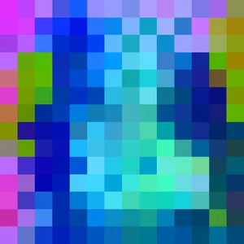
GT Future Observation
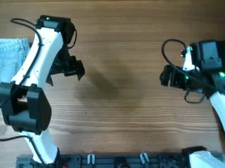
VFM
Stage (b) Scaling Chain-of-Dynamics via RL
Training-Only
Chain of Dynamics
ℒreplay…
q̃t
VLM
Action Decoder
History + Observation
“Fold cloth”
Task
Query
Proprio
Noised action
World Imagination Reward
zt+Δ
z*t+Δ
Human Videos
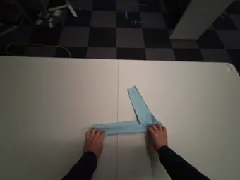
Rollout
154376515251962
35491866761583
⋮
19495001646
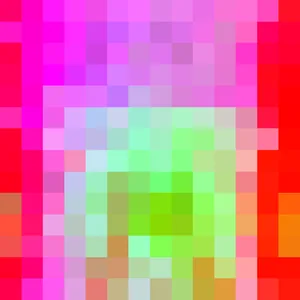
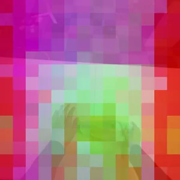
Robot Videos
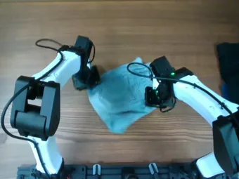
Rollout
88616691124598427
3610541127
⋮
1942145619511967
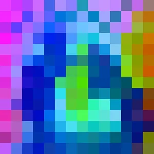
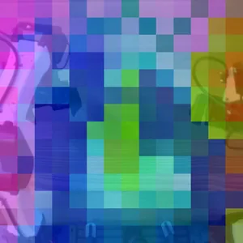
Imagined WorldFuture World State
Reasoning at training time, fast at deployment
Chain-of-Dynamics and imagination are used only during training, so inference runs as fast as a standard VLA.
Real-World Experiments
Generalization on a bimanual robot
Three bimanual tasks. Each is trained on in-domain setups and tested on changes the policy never saw.
ThinkWorld succeeds in 60/60 in-domain and 52/60 out-of-distribution trials.
Side-by-side rollouts
Same scene, four policies. Baselines break down when the scene changes; ThinkWorld keeps succeeding.
Show teleoperated training demonstrations for this task
Skill composition from human video
Robot data covers only atomic skills; the full sequence appears only in human videos. ThinkWorld performs the whole sequence in one rollout.
Human demonstration · egocentric
ThinkWorld rollout · robot, single episode
Robot training data: atomic skills only
Analysis
What does Chain-of-Dynamics capture?
CoD drives the imagined future
Only the generated CoD moves the imagined future toward the real one. Shuffled, empty or missing CoDs stay close to the current frame.
CoD matters where the scene moves
Similarity to the true future on the 25% of patches that change the most.
Colors are PCA projections of DINOv3 features.
CoD attends to what moves
CoD tokens focus on hands, grippers and the objects they move.
Every component contributes
Each component adds to robustness on LIBERO-PRO. Future prediction gives the largest gain.
Per-axis numbers
Simulation Benchmarks
Robust to task and environment shifts
Trained on LIBERO, tested zero-shot on LIBERO-PRO, which changes objects, positions, instructions, goals and environments.
Success rate (%). Bold: best, underline: second best. † reproduced by the authors.
97.3%LIBERO average, best overall
55.6%LIBERO-PRO average, best overall
+11.1pts on Task shifts vs. VLA-JEPA
+19.9pts on Environment shifts vs. VLA-JEPA
Additional Results
Imagination stays on track in closed loop
During closed-loop rollouts, the imagined future (+1 s) keeps tracking what actually happens. Scrub through an episode to compare.
Citation
BibTeX
@inproceedings{thinkworld,
title = {ThinkWorld: World Imagination Reinforces Chain-of-Dynamics Reasoning},
author = {Kim, Chaehyun and Huang, Chi-Pin and Kim, Jisoo and Chen, Min-Hung and Wang, Yu-Chiang Frank and Kim, Seungryong and Yang, Fu-En},
booktitle = {TBD},
year = {TBD}
}